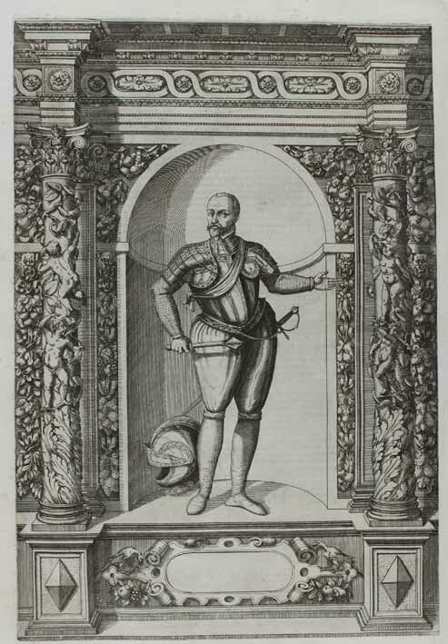
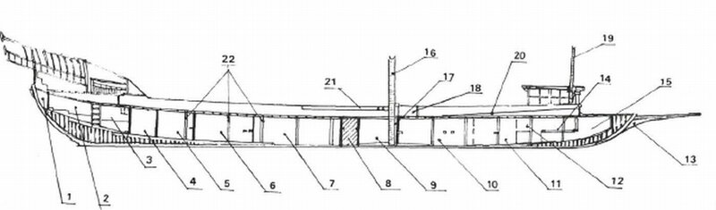

polienus высказал сомнение в правильности схемы сражения на центральном участке, которую составил адмирал Жюрьен де ла Гравьер. Основанием для этого сомнения явились последующее развитие событий, при котором в бой вступили галера Маркантонио Колонны (находилась к югу от Дона Хуана) и галера Пертев-паши (ее место в турецком ордере находилось к северу от Али-паши). К сожалению, источники не могут дать нам информации, разрешающей эти сомнения. Вот, для примера, два противоречивых свидетельства. В списке Контарини галера Али-паши идет под номером 45, а галера Пертев-паши – под номеро 46. Учитывая, что нумерация осуществляется с северного фланга к южному, галера Пертев-паши оказывается к югу от Султаны. Но в то же время на авторитетном изображении боевого ордера турок Капитана Пертев-паши находится к северу от Султаны.
polienus высказал сомнение в правильности схемы сражения на центральном участке, которую составил адмирал Жюрьен де ла Гравьер. Основанием для этого сомнения явились последующее развитие событий, при котором в бой вступили галера Маркантонио Колонны (находилась к югу от Дона Хуана) и галера Пертев-паши (ее место в турецком ордере находилось к северу от Али-паши). К сожалению, источники не могут дать нам информации, разрешающей эти сомнения. Вот, для примера, два противоречивых свидетельства. В списке Контарини галера Али-паши идет под номером 45, а галера Пертев-паши – под номеро 46. Учитывая, что нумерация осуществляется с северного фланга к южному, галера Пертев-паши оказывается к югу от Султаны. Но в то же время на авторитетном изображении боевого ордера турок Капитана Пертев-паши находится к северу от Султаны.
Схема центра турецкой эскадры
Раз уж мы заговорили о флагмане эскадры Святого престола, отвлечемся на короткое время от общего описания сражения в центре и скажем еще несколько слов о маневрировании галеры Маркантонио Колонны, взяв за основу обстоятельный труд Alberto Guglielmotti (Marcantonio Colonna alla battaglia di Lepanto … (Firenze, F. Le Monnier,1862)). Эта книга основана на подлинных документах из архивов Колонны и Каэтани, так что не может быть проигнорирована.Может быть отрывок их нее прольет дополнительный свет на характер маневрирования флагманских кораблей сторон в разгар битвы.

Маркантонио Колонна. Гравюра на меди Giovanni Battista Fontana
…Вернувшись на свою галеру с последнего совещание у Дона Хуана, Маркантонио Колонна стал готовить корабль к бою. Прежде всего, он выполнил указание Верховного главнокомандующего флотом Священной лиги и приказал убрать шпирон на своем корабле и сделать настилы на банках для удобного перемещения воинов во время сражения. Затем распределил офицеров между отдельными участками галеры.

Продольное сечение галеры
За оборону средней части галеры (mezzania, участок от грот-мачты до камбуза) ответственными были назначены Pirro Malvezzi и граф Berardi; на носовую часть палубы (quartier di prua) были поставлены Virginio Orsini da Vicovaro и Pompeo Colonna; оборонять носовую надстройку (или боевую платформу, rambate, рамбат) должны были Lelio de'Massimi, Biagio Capizucchi, Giulio Gabrielli и Francesco Nari. Участок в районе камбуза (focone) оборонял Iacopo Frangipani, в районе шлюпки (schifo) - Orazio Orsini da Bomarzo, и, наконец, важный участок на корме (poppa) был поручен Francesco Graziani, Michele Bonelli, Annibale degl' Oddi, Orazio Corona, Ridolfini, Brandimarte и джентльменам из его семьи.
Движение галеры Колонны до соприкосновения с кораблями турок происходило в общем строю. Мы это уже подробно осветили выше. Когда галеры турок обошли венецианские галеасы, Султана Али-паши, шедшая на полкорпуса впереди галер своей эскадры оказалась, как пишет Гуллельмотти, нос в нос с галерой папского адмирала. («La capitana d'Aly, quasi di mezzo corpo precedendo le conserve, correva difilata a cercare la capitana del Papa») Здесь доминиканский монах расходится в своих описаниях с другими источниками, которые утверждают, что галера Али направлялась точно на галеру Веньера.
Последовавшая затем перемена курса Султаны привела, как мы уже знаем, к столкновению ее с Реалом, причем нос Султаны «наехал» на нос Реала («la galera del Turco, come più alta di bordo, caricò sopra quella di Spagna»). Капитана Колонны, чтобы помочь Дону Хуану, устремилась к флагману Али-паши и протаранила ее в районе третьей носовой банки. Пертев-паша, в свою очередь, решил оказать помощь Али-паше и на полном ходу «вписался» в среднюю часть папской Капитаны. Затем к схватке флагманов подключились другие галеры христиан и мусульман.
О дальнейшем развитии событий мы узнаем из продолжения основного рассказа.